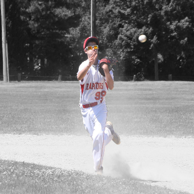
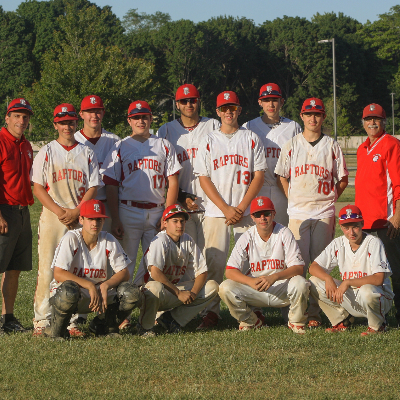

|
|
|
|---|
As you already know, my name is Derek Razza. At the time of making this website, I am currently 19 years old and am in my freshman year at the University of Rhode Island. I was born and raised in Warwick Rhode Island and for high school I attended Bishop Hendricken High School. There, I was in the ambassadors program and played on the varsity golf team. I can say with confidence that those were the best four years of my life.
Fun fact about myself, if you ask any of my friends and family they will all tell you that I have a burning passion of cars and i love cars way too much. I love everything about cars, I love talking about them, working on them, driving them, racing them (on a track of course).
I also played baseball for 12 years of my life and love baseball but like with all things, you tend to get bored of it/them after a while. I also developed Tendinitis in my elbow which affected my throwing ability and constantly makes my elbow crack, which hurts. I also love being outside and love the outdoors, whether its fishing, playing baseball, basketball, swimming, etc.  